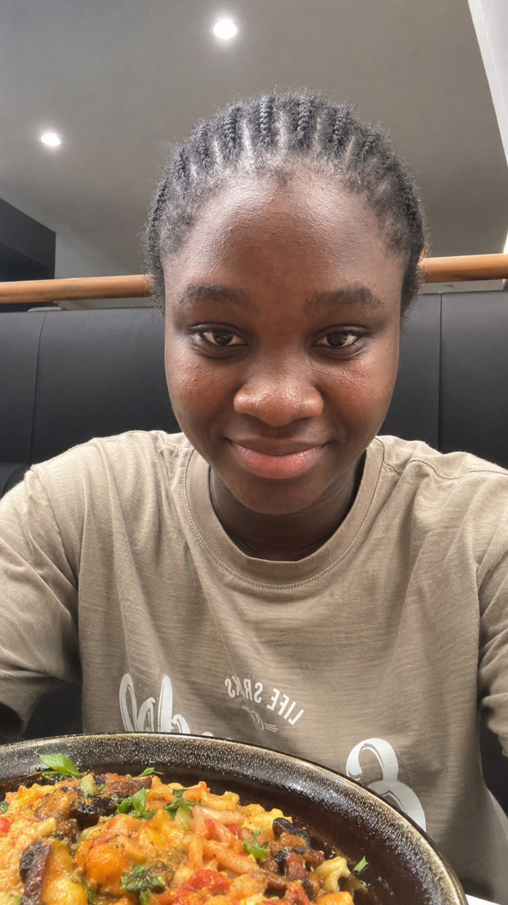
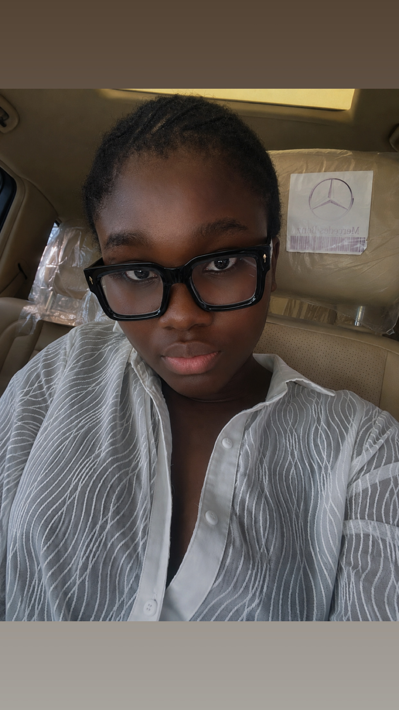
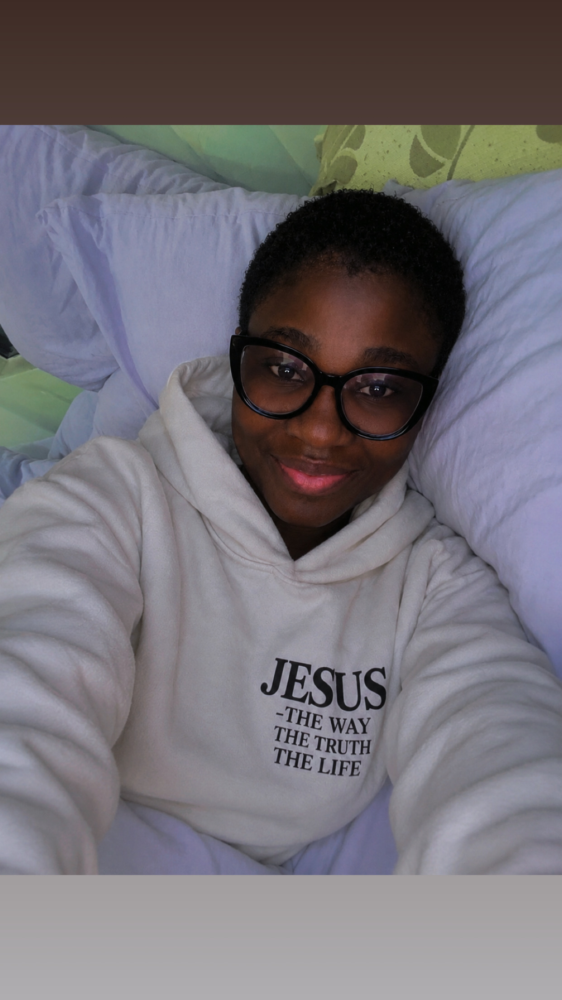

About me
AquariusEnneagram 5
I’m a product designer, product manager, and brand strategist based in Lagos 🇳🇬 who’s a little obsessed with turning messy ideas into things that actually make sense.
I love designing digital experiences, building brands, solving problems, and figuring out the “why” behind what people do.
I’ve spent the last few years jumping between Figma, startups, strategy, and way too many ideas at once. When I’m not designing, you’ll probably find me exploring AI, working on a new project, watching something inspiring, or convincing myself that this is finally the last idea I’m going to build. 🚀
Keep readingMy approach
I combine UX thinking with product strategy to design scalable solutions that solve real user needs, align with business goals, and are built to last (not just sit in Figma). No fluff. No over-design. Just thoughtful, tested solutions that work.
Good design builds trust.
Strategic design beats over-design.
Done > perfect
Don't design in a vacuum